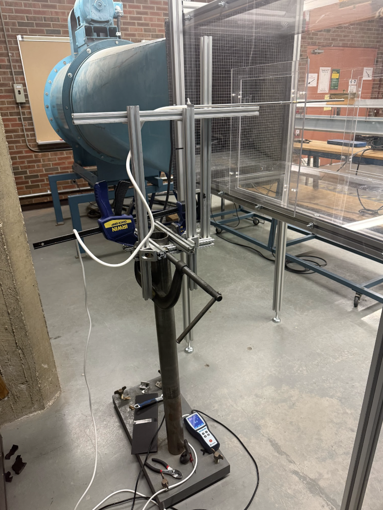
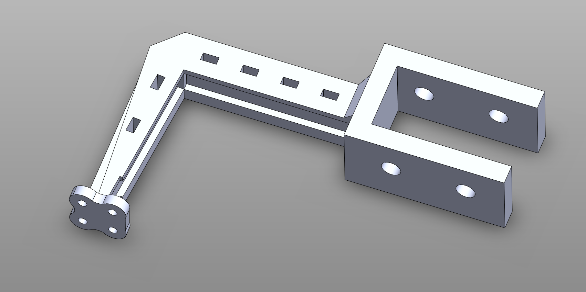
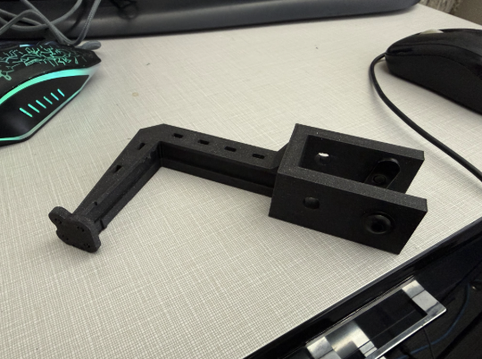
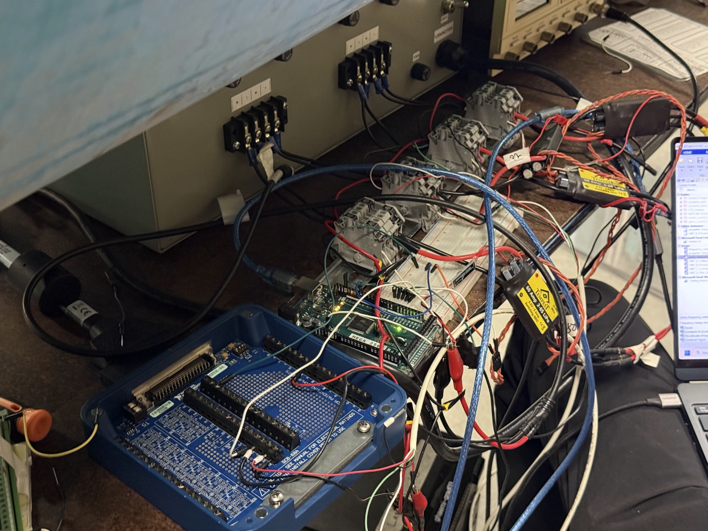
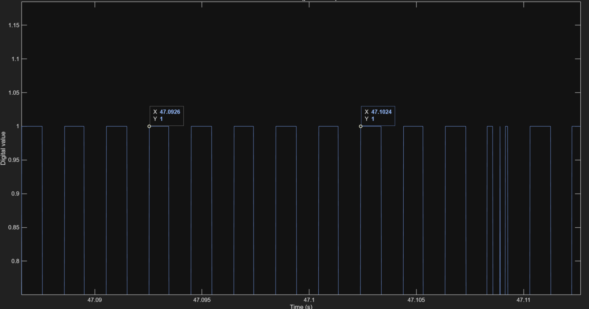

80/20-mounted dynamic test jig with DAQ logging motor performance across duty cycles.
Gallery

80/20 extrusion stand

Dynamic testing jig CAD

Dynamic testing jig on desk

DAQ during dynamic testing

Logged results at 50% duty cycleMotor running (video)
Problem
No fixture in the wind tunnel that could hold the different test articles (canards, propellers, pitot tube) in a repeatable, reusable way
Needed a way to run a motor/propeller in the tunnel and log its behavior at high fidelity for frequency sweeps
The motor's own vibration and airflow couldn't be allowed to corrupt the measurements, so the mounting had to minimize aerodynamic coupling between the propeller and the jig body
Proposed Solution
Build one modular stand that works across the canards, propellers, and pitot tube in the wind tunnel
Design a dedicated propeller/motor jig that keeps the body far enough out of the propeller flow to avoid interfering with the readings
Log the raw signal at high sample rate so frequency content could be pulled out cleanly afterward
Design Process
Built the base around a heavy block already in the lab for stability, using spare 80/20 aluminum extrusion and clamps to hold everything in place
Laser cut acrylic windows for everything entering the tunnel: a hole for the CF rod on the canard wing, a rectangular cutout for the aluminum extrusion, and a hole for the pitot tube
Motor ran hot during testing, so switched the jig material to ASA to avoid melting
Applied the same strength approach as the static jig: gyroid infill and tuned print orientation
Sized the propeller standoff using slipstream contraction from momentum theory: a propeller accelerates the air through it, so by continuity the wake contracts to a smaller stream tube, ideally about 0.707 of the prop radius. For the 6x4 APC (radius ≈ 76mm), that puts the fully contracted slipstream at roughly 54mm, so I placed the jig body at 65mm to sit just outside that stream tube with margin, keeping the structure out of the accelerated wake so it wouldn't corrupt the aerodynamic measurements
Treated 0.707R as a conservative bound since it's the ideal static case; real contraction is weaker in tunnel freestream flow, so the 65mm standoff has margin built in
Initially planned to reuse the legacy LabVIEW setup, which already did 0.5s logging via FFT over a 0.5s window
Realized that logging any faster with the FFT approach would wreck frequency resolution due to the time-frequency uncertainty tradeoff (a shorter FFT window gives coarser frequency resolution)
Switched to logging the raw waveform straight to a binary file via the DAQ at 20kHz, which captures the full signal and lets the FFT be done offline with any window
At 20kHz sampling, the usable frequency range goes up to 10kHz (Nyquist)
Final Product
Modular wind tunnel stand reused across canards, propellers, and the pitot tube
Dedicated propeller jig that runs the motor without the body corrupting the aerodynamic measurements
Raw-waveform logging pipeline capturing clean data up to 10kHz for frequency sweeps
Propeller frequency sweeps completed with good, usable data